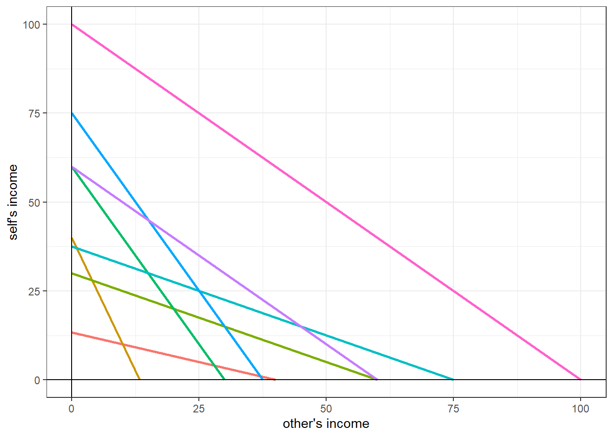

5 Reading: Which is the fair sex?
Andreoni, James, and Lise Vesterlund. “Which is the fair sex? Gender differences in altruism.” The Quarterly Journal of Economics 116, no. 1 (2001): 293-312.
library(dplyr)
library(ggplot2)
library(tidyr)
params<-data.frame((read.csv("AV2001parameters.csv")))
D<-read.csv("AV2001choices.csv")
D$id<-D$X
Keep<-(data.frame(D)
%>% gather(Decision,keep,keep1:keep8)
%>% mutate(Decision=(as.numeric(gsub("keep", "", Decision)))
)
)
knitr::kable((params))| X | income | pSelf | pOther |
|---|---|---|---|
| 1 | 40 | 3 | 1 |
| 2 | 40 | 1 | 3 |
| 3 | 60 | 2 | 1 |
| 4 | 60 | 1 | 2 |
| 5 | 75 | 2 | 1 |
| 6 | 75 | 1 | 2 |
| 7 | 60 | 1 | 1 |
| 8 | 100 | 1 | 1 |
5.1 plot the budget sets
params<-(params
%>% mutate(
maxSelf=income/pSelf,
maxOther=income/pOther
)
)
(ggplot(params,aes(color=as.factor(X)))
+geom_segment(aes(y=(income/pSelf),x=0,yend=0,xend=(income/pOther)),size=1)
+theme_bw()
+geom_hline(yintercept=0)
+geom_vline(xintercept=0)
+xlab("other's income")+ylab("self's income")
+theme(legend.position="none")
)
5.2 Classification into 3 types of subject
\[ \begin{aligned} \text{selfish: } u(x,y)&=x\\ \text{perfect substitutes: } u(x,y) &= x + \alpha y\\ \text{perfect complements: } u(x,y) &=\min\{x,\alpha y\} \end{aligned} \]
We will just set \(\alpha =1\)
params<-params %>% mutate(selfish=-1,PC=-1,PS=-1)
for (xx in unique(params$X)) {
d<-params %>% filter(X==xx)
pass<-0:d$income
KeepGrid<-d$income-pass
self<-(d$income-pass)/d$pSelf
other<-pass/d$pOther
Payoffselfish<-self
Selfish<-KeepGrid[which.max(Payoffselfish)]
PayoffPS<-self + other
PS<-KeepGrid[which.max(PayoffPS)]
PayoffPC<-self*(self<=other)+other*(self>other)
PC<-KeepGrid[which.max(PayoffPC)]
params[xx,]$selfish<-Selfish
params[xx,]$PS<-PS
params[xx,]$PC<-PC
}
SSR<- (Keep %>% left_join(params %>% mutate(Decision=X) ,by="Decision")
%>% mutate(resid2_selfish=(selfish-keep)^2,
resid2_PC=(PC-keep)^2,
resid2_PS=(PS-keep)^2,
)
%>% group_by(id)
%>% summarize(SSR_selfish=sum(resid2_selfish),
SSR_PC=sum(resid2_PC),
SSR_PS=sum(resid2_PS))
)
TypeList<-c("Selfish","PC","PS")
SSR$type<-TypeList[apply(SSR %>% select(SSR_selfish,SSR_PC,SSR_PS),1,FUN=which.min)]
SSR<-(SSR %>% mutate(Perfect = (SSR_selfish*SSR_PC*SSR_PS)==0)
%>% group_by(type,Perfect)
%>% summarize(count = n())
)
knitr::kable(SSR)| type | Perfect | count |
|---|---|---|
| PC | FALSE | 75 |
| PC | TRUE | 1 |
| Selfish | FALSE | 35 |
| Selfish | TRUE | 31 |